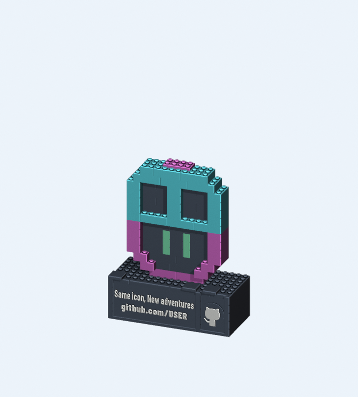
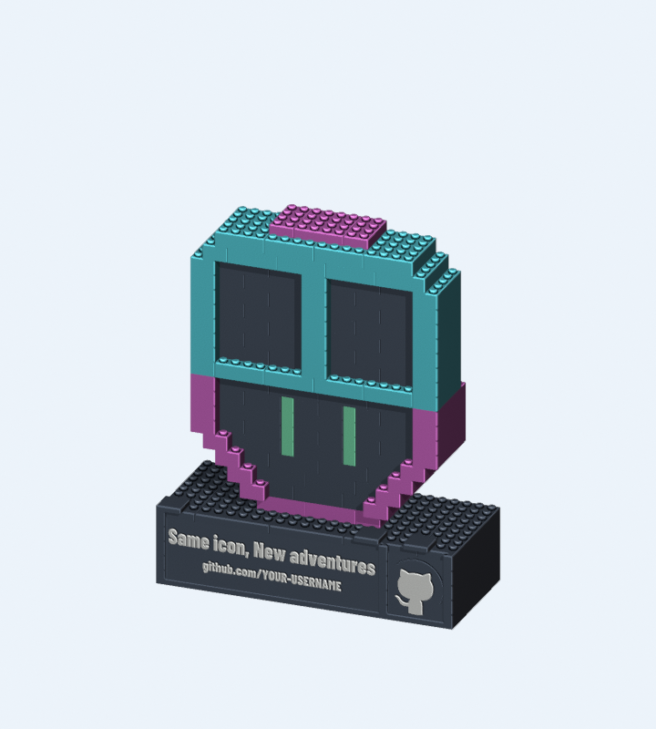
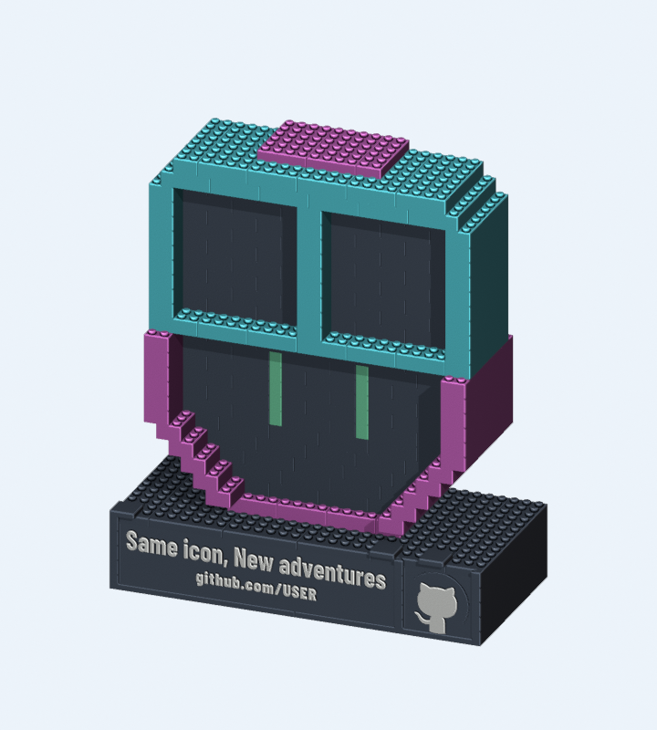

A MINI RELIEF
顔は16 mm厚の浅いレリーフ。
机の小さな余白に。
- 実寸 / mm
- 143.8 × 63.8 × 149.0
- 部品数 / 本体の段数
- 74点 / 14段
8 MM GRID · FOUR COLORS · ZERO ELECTRONICS
同じ顔を、3つのサイズと立体感で。
プリントして、一段ずつ組み立てる
あなたの机の小さな相棒。
P1S / PLA / 0.4 & 0.2 mm · AMS不要
完成形。部品をクリックして寸法と印刷ファイルを確認できます。
PART INSPECTOR
選んだ部品の形状ID・色・寸法・三面図がここに表示されます。
見えない裏側にも、
接続のための形があります。
SAME PITCH. DIFFERENT PRESENCE.
すべて8 mmピッチ。
STLの拡大ではなく、配置と奥行きの違いです。

顔は16 mm厚の浅いレリーフ。
机の小さな余白に。

顔は32 mm厚。段差のあるゴーグルと
輪郭のバランスを楽しむ標準型。

顔は48 mm、側面は80 mm厚。
横からも眺めたい立体型。台座は2枚。
奥行きはグリッドの名目値です。個々の部品外形は隙間分0.2 mm小さく、実寸には最上部のスタッド・台座を含みます。部品数はドックと交換カード込み、試験片は別です。
WATCH THE BUILD
選択中のBの実Blenderレンダー。
工程順の組立と、完成形のターンテーブル。
THE ACTUAL PARTS
FreeCADの形状から書き出したSTLを、そのままBlenderと3D表示にも使っています。部品番号、色、配置、組立順は共通です。
動画は組立順を伝えるものです。重力・保持力のシミュレーションや実物の嵌合試験ではありません。
MP4を保存 ↓編集できるBlenderシーン ↓PRINT SMALL. THEN BUILD.
A/B/Cを選び、4色のPLA、ノギス、プリンタを用意。STLはmm・100%で読み込みます。
小さなオス・メス片から。実物との両方向の接続と保持を測り、合うまで補正します。
試験片セット ↓0.4 mmが基本。文字は0.2 mmを推奨。冷まして外し、BOMどおりトレーへ並べます。
番号付き図に沿って、台座→ドック→本体→頭頂→カード。最後に保持と転倒を確認します。
PLAの割れ、印刷誤差、屋根の垂れ、保持力、転倒しにくさは実物で確認が必要です。接続を強制しない・頭を持って運ばない・小部品を子どもに渡さない。成人向けの屋内装飾品です。
THE COMPLETE WORKSHOP
表示中：B / DESK CLASSIC
ネイティブファイルは別プロセスで再読込しています。
Character Tributeの現在の状態 →
接着案は不採用です。小さな色レリーフも含め、無接着・着脱可能な構造へ変更しています。旧接着版の製作ダウンロードは取り下げ、原3案とは分離しています。
{kind=link}